A Galáxia queimará!
O Caos não é apenas um inimigo externo, mas o reflexo das sombras da alma humana. Composto por traidores que um dia foram os maiores defensores do Império, os Heretic Astartes abraçaram as Poderes Ruinosos em troca de imortalidade e poder além da compreensão mortal. Eles não lutam apenas por território, mas para desmantelar a farsa do Trono Dourado. Liderados por visões de vingança e alimentados pelas energias mutáveis do Warp, eles são a prova viva de que até os deuses podem sangrar e que o destino da galáxia é o retorno ao caos primordial.
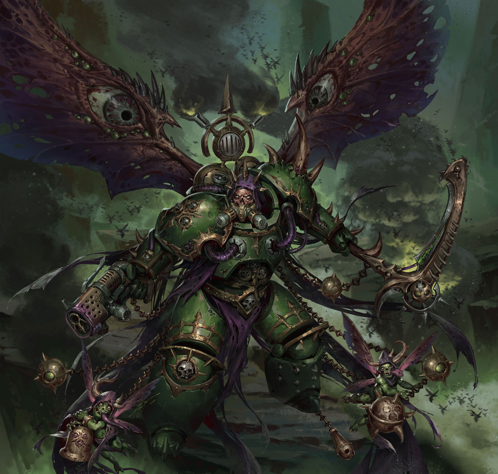
Death Guard Marine
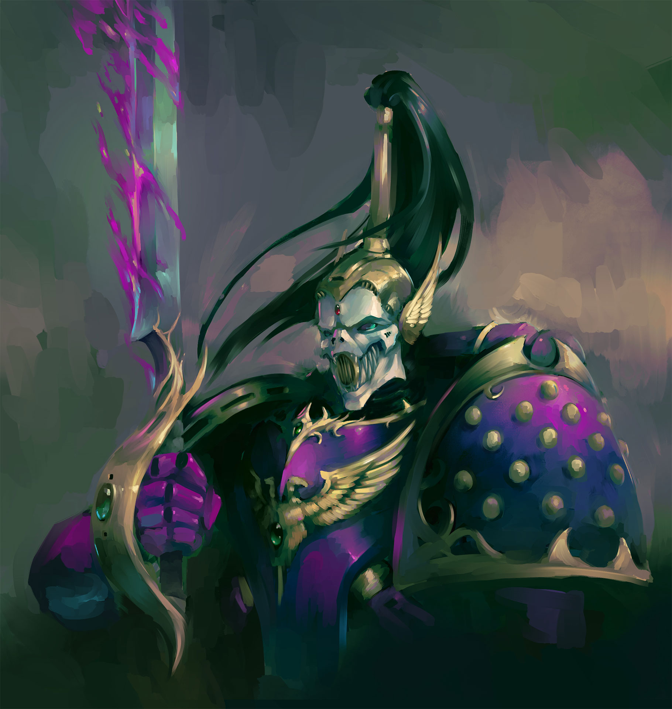
Lucius the Eternal
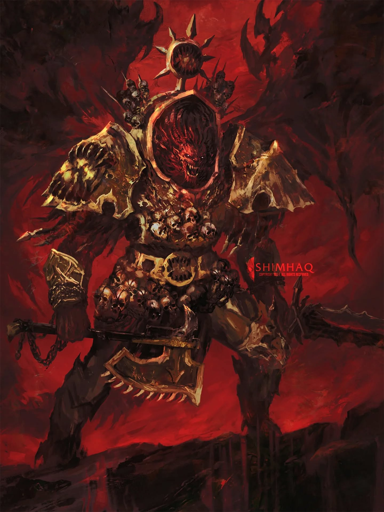
Khorne Lord
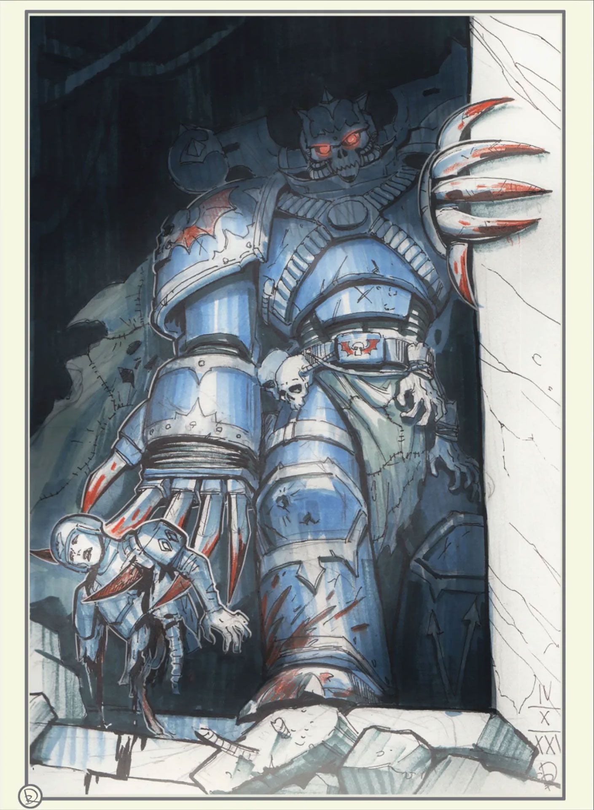
Alpha Legion Marine
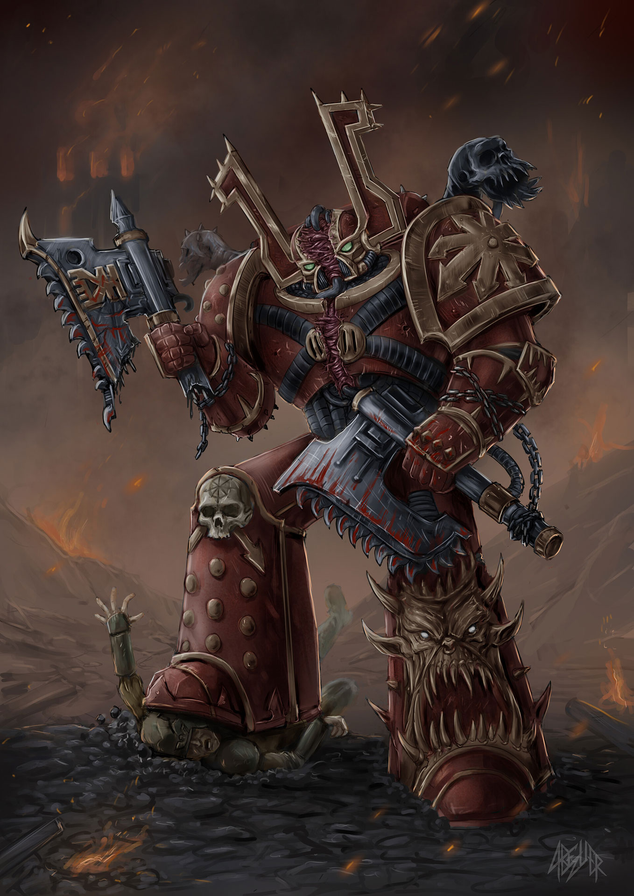
Khorne Berzerker
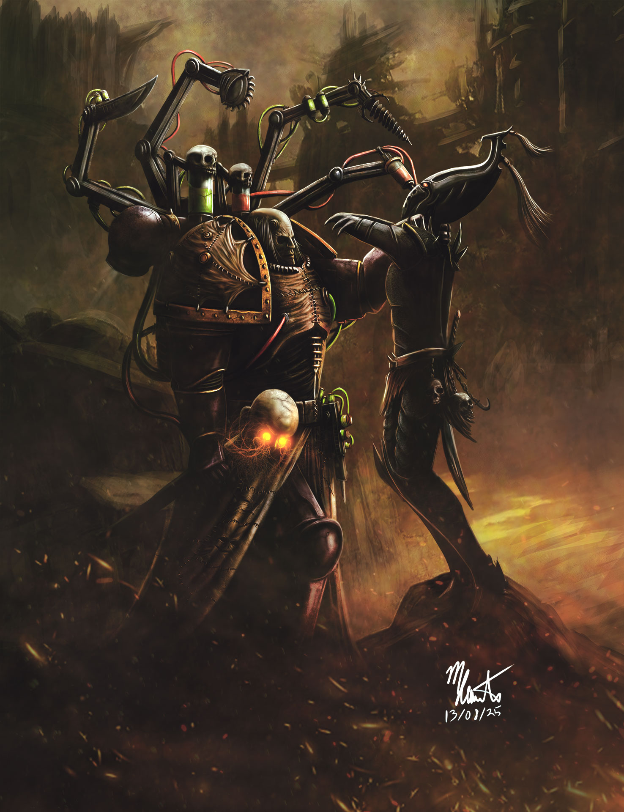
Abaddon the Despoiler
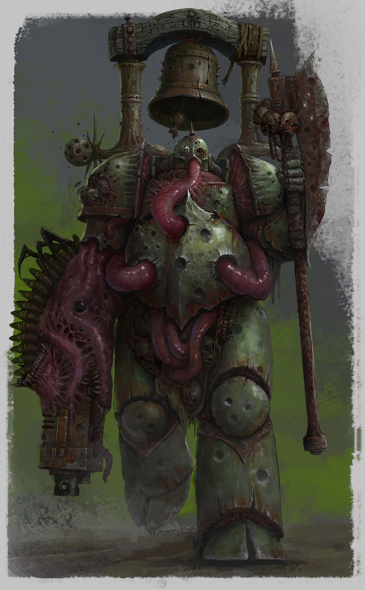
Plague Marine
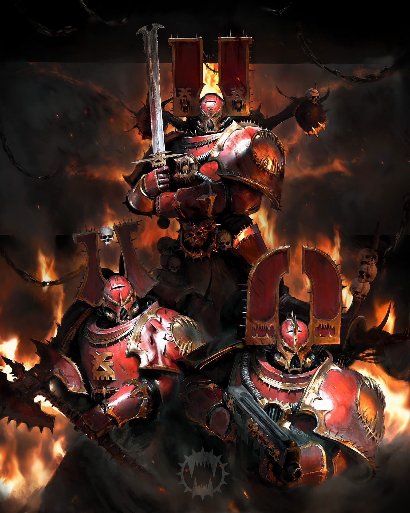
World Eaters Squad
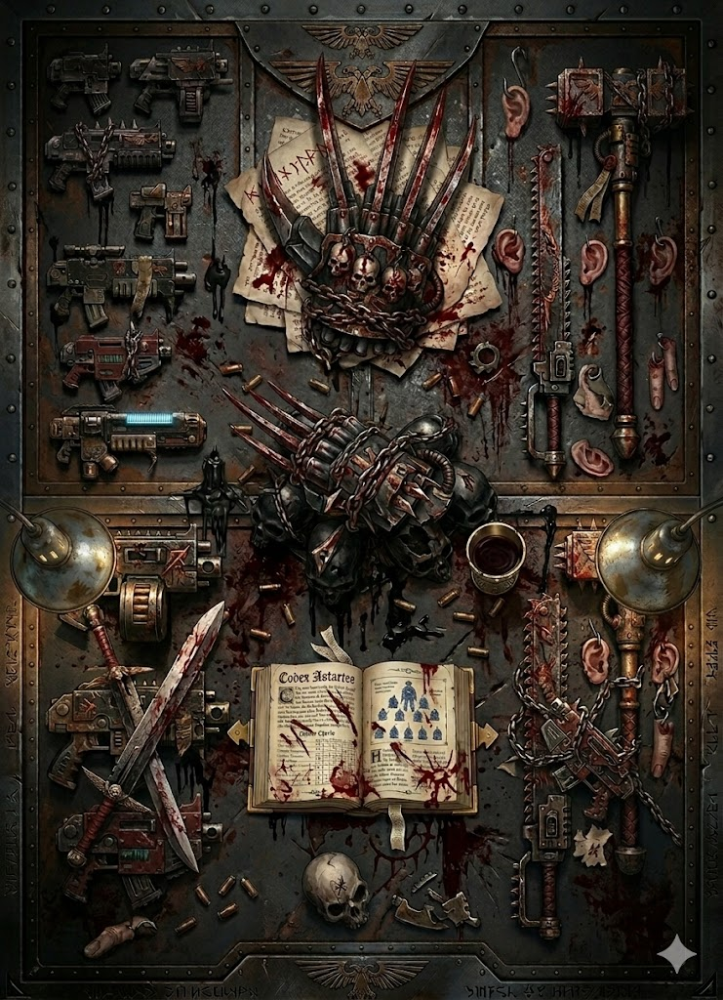
O armamento do Caos é uma distorção profana da tecnologia imperial, fundida com feitiçaria e
entidades demoníacas. O Combi-Bolter ruge com munição amaldiçoada, enquanto lâminas de energia
pulsante são banhadas em sangue de sacrifícios para cortar a realidade.
Nas mãos dos Chosen e Chaos Lords, encontramos armas 'Daemonbound', onde um demônio vivo é
aprisionado dentro da lâmina ou do canhão, conferindo-lhes uma vontade própria e uma sede
insaciável por almas. De maças de energia que emitem ondas de choque de agonia a canhões
ceifadores que cospem fogo infernal, cada arma é uma extensão da vontade dos Deuses Escuros.
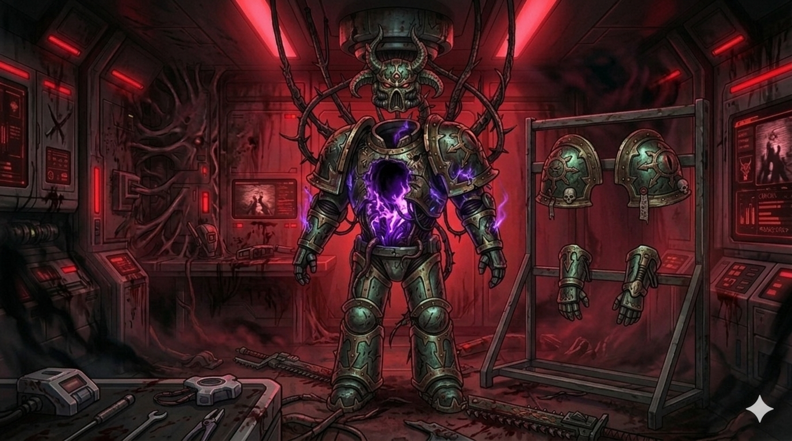
Uma Chaos Power Armor é uma relíquia de dez mil anos de guerra constante, muitas vezes fundida permanentemente à carne do seu portador através de mutações grotescas. Decoradas com espinhos, troféus de inimigos caídos e runas que desviam disparos através de manipulação da sorte, essas armaduras são virtualmente indestrutíveis. A proteção não vem apenas da cerite reforçada, mas de pactos demoníacos que permitem que o guerreiro ignore ferimentos que desintegrariam um homem comum. Para um Space Marine do Caos, sua armadura é seu altar pessoal, um testemunho de suas atrocidades e de sua devoção ao panteão negro.
Com a ascensão de Huron Blackheart como o principal estrategista das frotas renegadas, o objetivo mudou. Não se trata mais apenas da Longa Guerra de Abaddon, mas da fundação de um contra-império que prospera no coração do Maelstrom. Huron lidera os Corsários Vermelhos e inúmeras legiões aliadas em ataques cirúrgicos que paralisam setores inteiros. Enquanto o Império se distrai com as frotas colmeia, o Caos se infiltra nas rachaduras de um governo em colapso, preparando o golpe final para transformar a galáxia em um banquete para os Deuses do Caos.
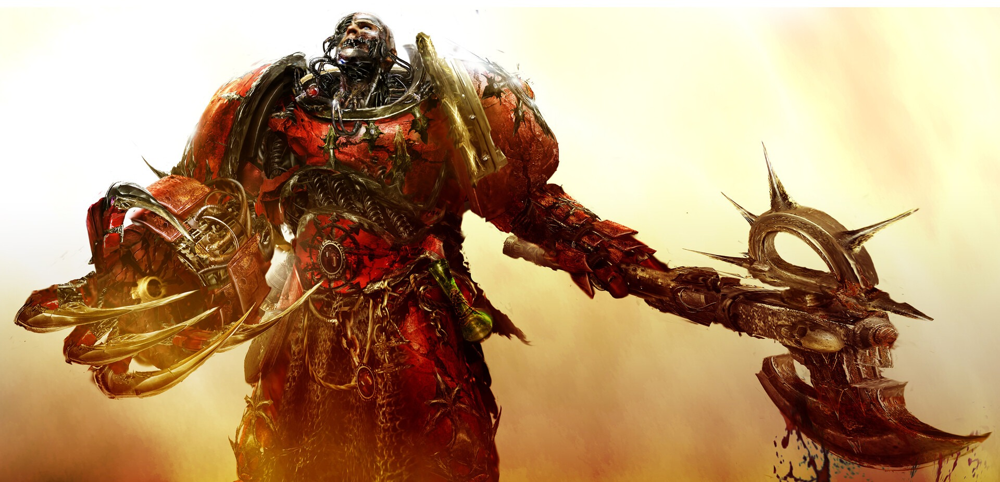